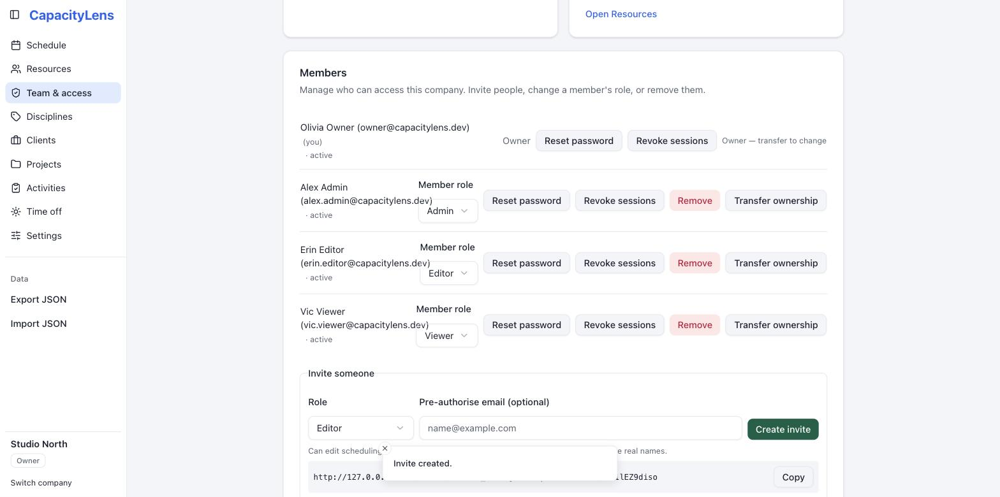
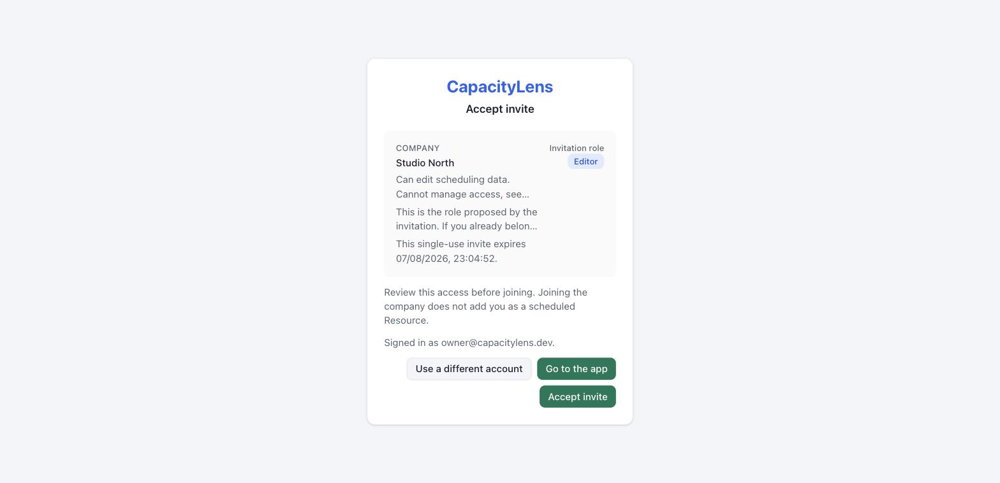

Invite your team
This page covers getting someone else into CapacityLens: creating an invite, what they see, and how they accept it. It takes about ten seconds on your side and roughly thirty seconds on theirs. It's optional — a solo Owner can finish setting up the schedule without inviting anyone, and can come back to this page later.
CapacityLens sends no invitation emails. You create a single-use link and paste it wherever your team already talks — Slack, a text message, whatever's fastest.
TIP
Inviting someone doesn't put them on the schedule, and adding someone to the schedule doesn't give them a sign-in. These are separate records — see Roles and permissions for why.
Prerequisites
- You need the Owner or Admin role to invite people. A Viewer or Editor can still open Team & access and see their own role and what it allows — they just see a note there that an Owner or Admin handles invitations, instead of the "Invite someone" panel. See Roles and permissions.
Create an invite
Open Team & access. Your own access is explained at the top of the page.

Choose a role in the "Invite someone" panel. The consequences of that role are spelled out in plain language underneath it, and you can optionally pre-authorise a specific email address.
Copy the one-time link. It's shown exactly once — the server keeps only a hash of it — so copy it now and send it to the person.

What the invitee sees
The invite link opens outside the normal sign-in wall, so the recipient can safely preview what they're joining before anything happens: your company name, the proposed role, what that role can and can't do, and when the link expires. Just opening the link never changes membership.

From there:
- Someone who already has a CapacityLens sign-in signs in and explicitly accepts the invite.
- Someone new creates a password sign-in and accepts in the same step.
Either way, they land directly on your schedule with their role visible.
Pending invites
Invites that haven't been accepted yet stay listed on Team & access as pending, along with your current members. Owners and Admins can see this list; other roles only see their own access.
Common questions
I lost the link before sending it — can I get it back? No. CapacityLens shows a one-time link's token exactly once and stores only a hash of it afterwards, so nobody — including you — can retrieve the original link again. Revoke the invite on Team & access and create a new one instead; the old link stops working as soon as you revoke it.
Can I run more than one company on this install? Not by default — a fresh install allows exactly one company. An administrator can turn on CAPACITYLENS_MULTI_ACCOUNT to allow more; see Configuration.
What's next
Roles and permissions explains exactly what each role can see and do, so you can pick the right one next time.